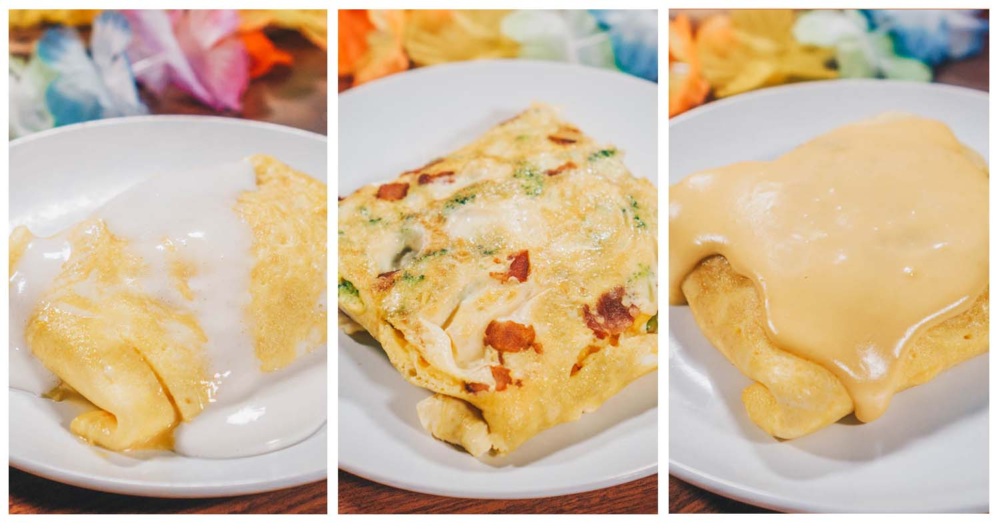

Plain Omelette

Last but not least... We have the classic Plain Omellette. You can not go wrong here. As much as we always wish we could get a special omelette from the Giant Omelette, every now and then it's OK to just get a Plain Omelette. We believe this must have been an accidental vote but hey, maybe some of you are just boring, and that's ok! So here it is. We recommend this be paired with a Gormet Coffee, but honestly you couldn't really go wrong with any drink. There is no flavor profile to be offended here.
Omellette Ingredients:
- 4 Cracked Keno Egg
- 1/2 teaspoon Sprinkling of Salt
- 1/2 teaspoon Sprinkling of Pepper
Directions:
- Whisk Cracked Keno Eggs, Sprinkling of Salt, and Sprinkling of Pepper.
- Spray skillet with cooking spray. Heat over medium heat. Pour in egg mixture. As eggs set around edge of skillet, with spatula, gently push cooked portions toward centre of skillet. Tilt and rotate skillet to allow uncooked egg to flow into empty spaces.
- When eggs are almost set on surface but still look moist, cover half of omelette with filling. Slip spatula under unfilled side; fold over onto filled half.
- Cook for a minute, then slide omelette onto plate.
- Eat!